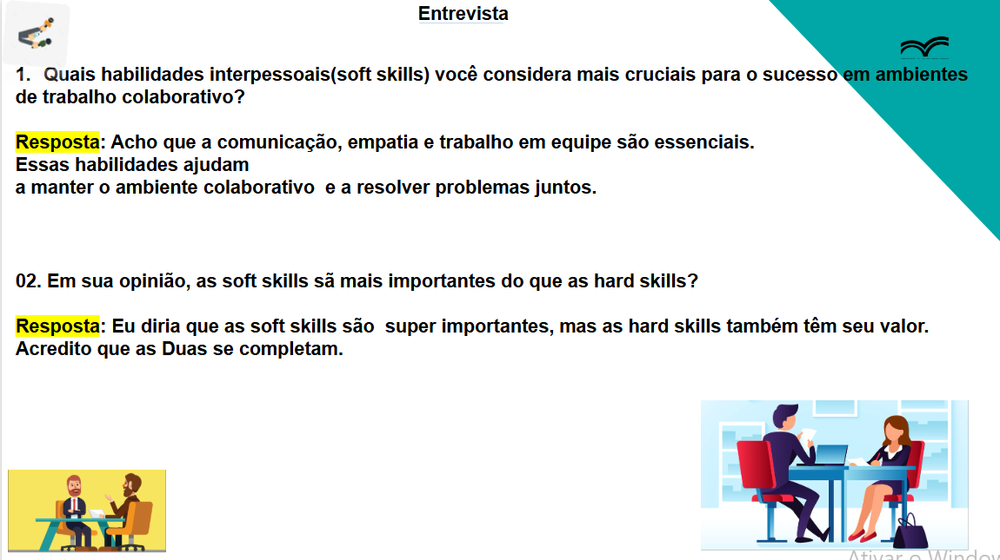
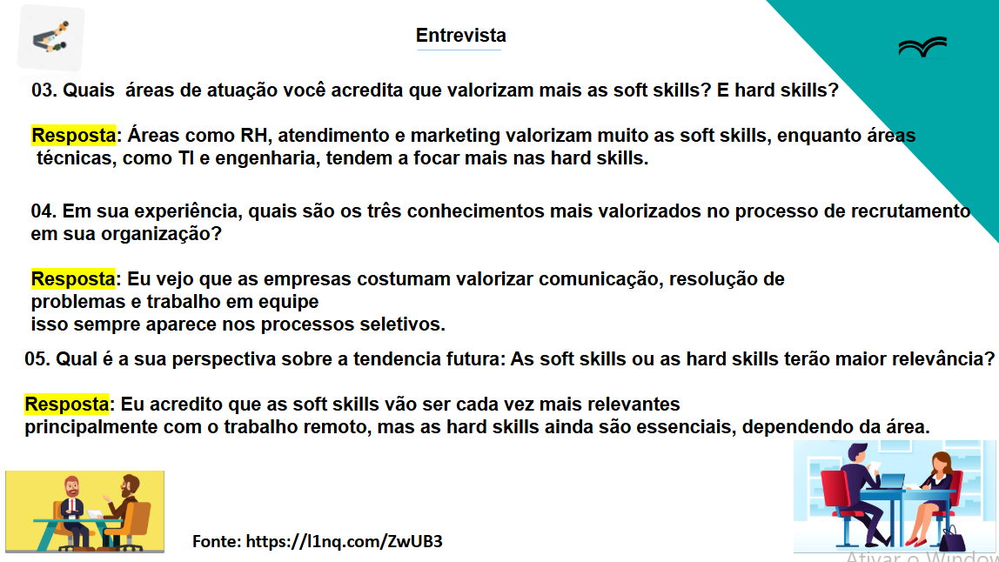

Luís Felipe Ramos de Arruda (6825684)
Roteiro:
1: Quais habilidades interpessoais (soft skills) você considera mais cruciais para o sucesso em ambientes de trabalho colaborativo?
Acho que a comunicação, empatia e trabalho em equipe são essenciais. Essas habilidades ajudam a manter o ambiente colaborativo e a resolver problemas juntos.
2: Em sua opinião, as soft skills são mais importantes do que as hard skills?
Eu diria que as soft skills são superimportantes, mas as hard skills também têm seu valor. Acredito que as duas se complementam.
3: Quais áreas de atuação você acredita que valorizam mais as soft skills? E as hard skills?
Áreas como RH, atendimento e marketing valorizam muito as soft skills, enquanto áreas técnicas, como TI e engenharia, tendem a focar mais nas hard skills.
4: Em sua experiência, quais são os três conhecimentos mais valorizados no processo de recrutamento em sua organização?
Eu vejo que as empresas costumam valorizar comunicação, resolução de problemas e trabalho em equipe. Isso sempre aparece nos processos seletivos.
5: Qual é a sua perspectiva sobre a tendência futura: as soft skills ou as hard skills terão maior relevância?
Eu acredito que as soft skills vão ser cada vez mais relevantes, principalmente com o trabalho remoto, mas as hard skills ainda são essenciais, dependendo da área.
Imagens da apresentação:

